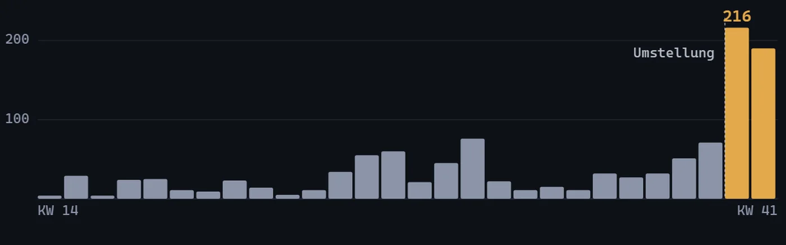

„Mit Agenten bekommt ihr mehr Pull Requests. Lesen muss die trotzdem jemand." Der Einwand kommt in jedem Gespräch über agentische Entwicklung, und er ist berechtigt: Mehr Durchsatz ist erst einmal nur mehr Arbeit für die, die reviewen. Ob dabei auch bessere Pull Requests herauskommen, ist eine andere Frage. Deshalb haben wir sie nicht diskutiert, sondern gemessen.
Die Ausgangslage
Das Team entwickelt ein Testmanagement-Werkzeug: vier Entwickler, ein Produkt, ein Repository. Mit KI-Werkzeugen gearbeitet hat es schon, bevor ich im Juli 2026 dazukam. Was fehlte, war ein gemeinsamer Ablauf. Jeder setzte Agenten so ein, wie es ihm sinnvoll erschien, und an den Übergaben zwischen Planung, Umsetzung und Review blieb Arbeit liegen.
Ich habe den Weg vom Ticket bis zum Merge in sechs Stufen zerlegt und für jede festgelegt, was sie an die nächste übergibt. Ohne dieses Ergebnis startet die nächste Stufe nicht. Die Agenten arbeiten in getrennten Rollen für Planung, Umsetzung und Review. An zwei Stellen entscheidet ein Mensch: Riskante Änderungen gibt jemand aus dem Team frei, und gemergt wird erst nach einem menschlichen Review. Eine eigene Sicherheitsprüfung läuft vor der Abnahme. Die Regeln dafür stehen aufgeschrieben, das Team ist darin eingearbeitet.
Wie gemessen wurde
Die Datenquelle sind die gemergten Pull Requests des Repositories, ausgelesen aus GitHub. Vorher sind das 27 Wochen mit 721 Pull Requests, nachher drei Wochen mit 407. Die Kennzahlen sind in beiden Zeiträumen dieselben: Pull Requests je Woche, Zeit bis zum Merge, Änderungswünsche und Nachbesserungsrunden je Pull Request — und als Gegenprobe die Größe der Änderungen in Zeilen.
Die Gegenprobe ist der wichtigste Wert in der Tabelle. Wenn ein Team nur kleinere Stücke einreicht, steigt der Durchsatz automatisch, ohne dass mehr fertig wird. Deshalb musste die Größe der Pull Requests stabil bleiben, sonst wäre die Messung wertlos.

Was herauskam
| Gemessen | vorher | nachher |
|---|---|---|
| Pull Requests je Woche | 26,7 | 135,7 |
| Median bis zum Merge | 1,8 h | 0,8 h |
| Änderungswünsche je Pull Request | 0,43 | 0,12 |
| Nachbesserungsrunden je Pull Request | 0,81 | 0,40 |
| Größe der Änderungen, Median | 522 Zeilen | 578 Zeilen |
Der Durchsatz hat sich verfünffacht. Gleichzeitig brauchen die Pull Requests weniger Korrekturen: 72 Prozent weniger Änderungswünsche und halb so viele Nachbesserungsrunden je Pull Request. Und die Gegenprobe hält: Die Änderungen sind im Median sogar etwas größer geworden, 578 statt 522 Zeilen. Der Durchsatz kommt also nicht daher, dass die Arbeit in mehr Stücke geschnitten wurde.
Mehr Durchsatz bei gleicher Größe und weniger Rückfragen heißt nicht „mehr Output". Es heißt weniger Reibung an den Übergaben — genau dort, wo wir angesetzt hatten.
Was die Zahlen nicht sagen
Drei Wochen gegen 27 bleiben eine dünne Vergleichsbasis. In die drei Wochen fiel außerdem ein großes Vorhaben, das einen Teil des Sprungs erklären kann. Die Zahlen sagen nichts darüber, wie viel Zeit die Menschen jetzt im Review verbringen, und nichts über die Qualität im Betrieb nach dem Merge. Beides messen wir als Nächstes: die Reviewzeit aus den Zeitstempeln, die Fehler im Betrieb je Release. Und dieselbe Messung noch einmal im Frühjahr, wenn aus drei Wochen zwanzig geworden sind.
Was ich mitnehme
- Vor der Umstellung messen, nicht danach. Ohne die 27 Wochen vorher wäre jede Zahl danach nur eine Behauptung.
- Immer eine Gegenprobe mitführen, die den Erfolg widerlegen könnte. Bei Durchsatz ist das die Größe der Änderungen.
- Der Gewinn liegt nicht im Agenten, der schneller tippt, sondern in Übergaben, die vollständig sind. Deshalb sind die Rückfragen gesunken, nicht nur die Wartezeit.
Der vollständige Ablauf mit allen sechs Stufen und allen Kennzahlen steht auf der Projektseite.